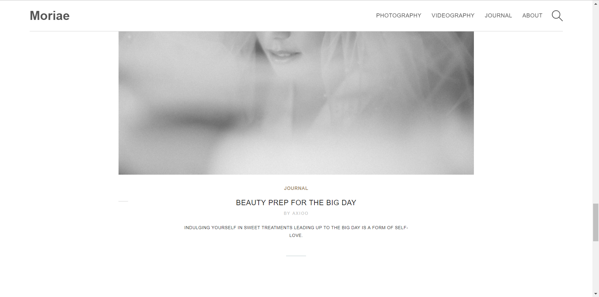

Moriae : Photography & Cinematography
html, css, php, javascript
Moriae is a group of passionate photographers, videographers, and designers working together to capture your special moments. in this project, The challenge is how we are going to present when most of Moriae content is showcase of their works but at the same time we have to consider the ease of access by the clients.


